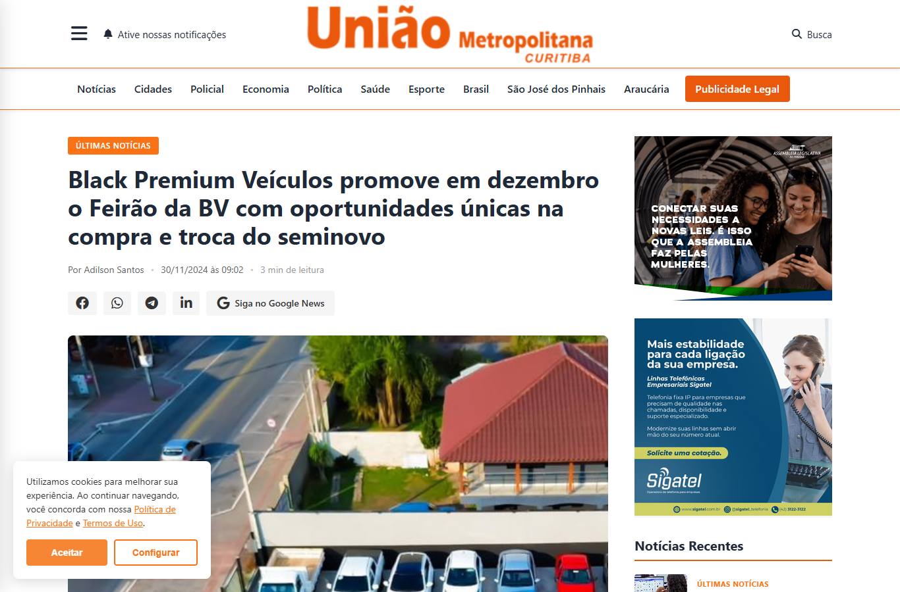
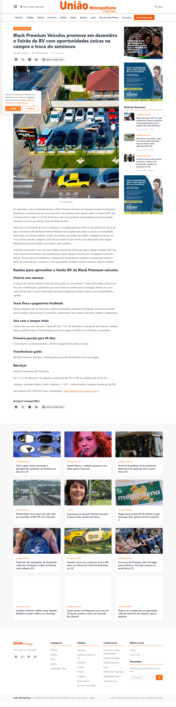

Sistema de Investigação de Marca e Identidade Online
https://uniaometropolitana.com.br/black-premium-veiculos-promove-em-dezembro-o-feirao-da-bv-com-oportunidades-unicas-na-compra-e-troca-do-seminovo/
Prioridade: MEDIUM · Cenário: B_AMBIGUOUS_COMMUNICATION · Revisão humana: PENDING
Embora hospedada em um portal de notícias local (União Metropolitana Curitiba), a página consiste em matéria promocional (publieditorial) divulgando a loja de seminovos Black Premium Veículos e seu evento comercial denominado 'Feirão da BV' e 'Feirão de Seminovos BV Financeira', com oferta de análise de crédito e direcionamento para o WhatsApp e site da revenda. Como há utilização da marca 'BV' / 'BV Financeira' para dar nome ao feirão da loja de veículos sem identificação do CNPJ da revenda e sem declaração formal da condição de correspondente bancário (Resolução CMN nº 4.935/2021), classifica-se como comunicação ambígua sujeita à revisão (B_AMBIGUOUS_COMMUNICATION / REVIEW_REQUIRED). [Revisor: CONFIRM] Confirma-se a classificação REVIEW_REQUIRED (prioridade MEDIUM). Trata-se de divulgação comercial/publieditorial da revenda de veículos Black Premium Veículos promovendo o 'Feirão da BV' e 'Feirão de Seminovos BV Financeira', oferecendo análise de crédito e condições de financiamento associadas ao Banco BV e direcionando clientes para o telefone/WhatsApp e site da loja, porém omitindo o CNPJ da revenda e a identificação clara da condição de correspondente bancário exigida pela Resolução CMN nº 4.935/2021.


| Ref | Tipo | Local | Conteúdo |
|---|---|---|---|
| E-URL | domain | url | URL final: https://uniaometropolitana.com.br/black-premium-veiculos-promove-em-dezembro-o-feirao-da-bv-com-oportunidades-unicas-na-compra-e-troca-do-seminovo/ (domínio: uniaometropolitana.com.br) |
| E-COLLECT | network | collection | Status da coleta: OK; HTTP 200; ocorrências: network did not become idle (continuing) |
| E-DISC-001 | text | search_index | Índice de busca (grounding): uniaometropolitana.com.br — **Estabelecimento / Perfil:** Black Premium Veículos (Campina Grande do Sul/PR) – Site vinculado: `blackpremiunveiculos.com.br` / Instagram: `@blackpremium_veiculos` | **URL:** `https://uniaometropolitana.com.br/` (Página promocional: *Feirão da BV da Black Premium Veículos* / *Serviço: Feirão de Seminovos BV Financeira*) | **Como utiliza a marca:** Divulga o evento interno da loja como **"Feirão da BV da Black Premium Veículos"** e **"Feirão de Seminovos BV Financeira"**, oferecendo análise de crédito no local, carência de 60 dias e vistoria online, direcionando contatos para o WhatsApp `(41) 3190-0222` e para o site da revenda | **Conformidade (CNPJ / Correspondente):** Identifica o nome fantasia, sócio-proprietário e endereço físico da loja, mas omite o CNPJ do estabelecimento e a declaração formal de correspondente bancário na divulgação do feirão |
| E-SHOT-VIEWPORT | screenshot | viewport | evidence\Cd42fae98ff\attempt-1\viewport.png (sha256 b317b79334c7156a…) |
| E-SHOT-FULL | screenshot | page | evidence\Cd42fae98ff\attempt-1\fullpage.png (sha256 304b9d051eb1fbc1…) |
| E-TITLE | title | head | Black Premium Veículos promove em dezembro o Feirão da BV com oportunidades únicas na compra e troca do seminovo - União Metropolitana Curitiba |
| E-META-1 | meta | head | description: Em dezembro, mês considerado festivo, a Black Premium Veículos de Campina Grande do Sul estará facilitando o caminho para um novo ano cheio de emoções |
| E-META-2 | meta | head | og:site_name: União Metropolitana Curitiba |
| E-META-3 | meta | head | og:title: Black Premium Veículos promove em dezembro o Feirão da BV com oportunidades únicas na compra e troca do seminovo |
| E-META-4 | meta | head | og:description: Em dezembro, mês considerado festivo, a Black Premium Veículos de Campina Grande do Sul estará facilitando o caminho para um novo ano cheio de emoções sobre quatro rodas. O Feirão da... |
| E-META-5 | meta | head | author: Adilson Santos |
| E-CANONICAL | meta | head | https://uniaometropolitana.com.br/black-premium-veiculos-promove-em-dezembro-o-feirao-da-bv-com-oportunidades-unicas-na-compra-e-troca-do-seminovo/ |
| E-HEAD-1 | heading | page | Buscar |
| E-HEAD-2 | heading | page | Siga-nos |
| E-HEAD-3 | heading | page | Black Premium Veículos promove em dezembro o Feirão da BV com oportunidades únicas na compra e troca do seminovo |
| E-HEAD-4 | heading | page | Razões para aproveitar o feirão BV da Black Premium veículos |
| E-HEAD-5 | heading | page | Vistoria sem estresse |
| E-HEAD-6 | heading | page | Taxas fixas e pagamento facilitado |
| E-HEAD-7 | heading | page | Saia com o tanque cheio |
| E-HEAD-8 | heading | page | Primeira parcela para 60 dias |
| E-HEAD-9 | heading | page | Transferência grátis |
| E-HEAD-10 | heading | page | Serviço: |
| E-HEAD-11 | heading | page | Gostou? Compartilhe! |
| E-HEAD-12 | heading | page | Notícias Recentes |
| E-HEAD-13 | heading | page | Cães e gatos terão vacinação e atendimento gratuitos em Pinhais nos dias 25 e 26 |
| E-HEAD-14 | heading | page | Ingrid Vianna, o talento paraense com alma quatro-barrense |
| E-HEAD-15 | heading | page | Terminal Guadalupe terá mutirão do Metrocard de segunda (23) a sexta-feira (27) |
| E-HDR | text | header | Ative nossas notificações Busca Notícias Cidades Policial Economia Política Saúde Esporte Brasil São José dos Pinhais Araucária Publicidade Legal | ÚLTIMAS NOTÍCIAS Black Premium Veículos promove em dezembro o Feirão da BV com oportunidades únicas na compra e troca do seminovo Por Adilson Santos • 30/11/2024 às 09:02 • 3 min de leitura Siga no Google News |
| E-FOLD | text | viewport (acima da dobra) | Ative nossas notificações Busca Notícias Cidades Policial Economia Política Saúde Esporte Brasil São José dos Pinhais Araucária Publicidade Legal Buscar Buscar Home Últimas Notícias Cidades Adrianópolis Almirante Tamandaré Antonina Araucária Balsa Nova Barra do Turvo/SP Bocaiúva do Sul Campina Grande do Sul Campo Largo Campo Magro Cerro Azul Colombo Contenda Curitiba Últimas Notícias Black Premium Veículos promove em dezembro o Feirão da BV com oportunidades únicas na compra e troca do seminovo Por Adilson Santos • 30/11/2024 às 09:02 • 3 min de leitura Siga no Google News Notícias Recentes Últimas Notícias Utilizamos cookies para melhorar sua experiência. Ao continuar navegando, você concorda com nossa Política de Privacidade e Termos de Uso . Aceitar Configurar |
| E-FTR | text | footer | Há 25 anos em circulação Categorias Policial Política Geral Cultura Publicidade Legal Cidades Araucária Campina Grande do Sul Colombo Curitiba Pinhais Piraquara Quatro Barras São José dos Pinhais Institucional Anuncie no União Metropolitana Edições Semanais Edições Especiais Início Política de Privacidade Publicidade Legal Termos de Uso Minha Conta Entrar Criar Conta Newsletter Receba as principais notícias em seu e-mail União Metropolitana - HS Marketing LTDA | CNPJ: 63.967.351/0001-96 | Sede: Quatro Barras - Paraná © 2026 União Metropolitana Curitiba. Todos os direitos reservados. |
| E-NAV | nav | header | <https://uniaometropolitana.com.br/> | Notícias <https://uniaometropolitana.com.br/c/noticias/> | Cidades <https://uniaometropolitana.com.br/c/cidades/> | Policial <https://uniaometropolitana.com.br/c/policial/> | Economia <https://uniaometropolitana.com.br/c/economia/> | Política <https://uniaometropolitana.com.br/c/politica/> | Saúde <https://uniaometropolitana.com.br/c/saude/> | Esporte <https://uniaometropolitana.com.br/c/esporte/> | Brasil <https://uniaometropolitana.com.br/c/diversidade/brasil/> | São José dos Pinhais <https://uniaometropolitana.com.br/c/cidades/sao-jose-dos-pinhais/> | Araucária <https://uniaometropolitana.com.br/c/cidades/araucaria/> | Publicidade Legal <https://uniaometropolitana.com.br/publicidade-legal/> | ÚLTIMAS NOTÍCIAS <https://uniaometropolitana.com.br/c/ultimas-noticias/> | Compartilhar no Facebook <https://www.facebook.com/sharer/sharer.php?u=https://uniaometropolitana.com.br/black-premium-veiculos-promove-em-dezembro-o-feirao-da-bv-com-oportunidades-unicas-na-compra-e-troca-do-seminovo/> | Compartilhar no WhatsApp <https://wa.me/?text=Black+Premium+Ve%C3%ADculos+promove+em+dezembro+o+Feir%C3%A3o+da+BV+com+oportunidades+%C3%BAnicas+na+compra+e+troca+do+seminovo+https%3A%2F%2Funiaometropolitana.com.br%2Fblack-premium-veiculos-promove-em-dezembro-o-feirao-da-bv-com-oportunidades-unicas-na-compra-e-troca-do-seminovo%2F> | Compartilhar no Telegram <https://t.me/share/url?url=https://uniaometropolitana.com.br/black-premium-veiculos-promove-em-de |
| E-CTA-1 | cta | header | Abrir Menu |
| E-CTA-2 | cta | header | Busca |
| E-CTA-3 | cta | page | Fechar Menu |
| E-CTA-4 | cta | page | Buscar |
| E-CTA-5 | cta | page | Mostrar itens de Cidades |
| E-CTA-6 | cta | header | Compartilhar no Facebook <https://www.facebook.com/sharer/sharer.php?u=https://uniaometropolitana.com.br/black-premium-veiculos-promove-em-dezembro-o-feirao-da-bv-com-oportunidades-unicas-na-compra-e-troca-do-seminovo/> |
| E-CTA-7 | cta | header | Compartilhar no WhatsApp <https://wa.me/?text=Black+Premium+Ve%C3%ADculos+promove+em+dezembro+o+Feir%C3%A3o+da+BV+com+oportunidades+%C3%BAnicas+na+compra+e+troca+do+seminovo+https%3A%2F%2Funiaometropolitana.com.br%2Fblack-premium-veiculos-promove-em-dezembro-o-feirao-da-bv-com-oportunidades-unicas-na-compra-e-troca-do-seminovo%2F> |
| E-CTA-8 | cta | header | Compartilhar no Telegram <https://t.me/share/url?url=https://uniaometropolitana.com.br/black-premium-veiculos-promove-em-dezembro-o-feirao-da-bv-com-oportunidades-unicas-na-compra-e-troca-do-seminovo/&text=Black+Premium+Ve%C3%ADculos+promove+em+dezembro+o+Feir%C3%A3o+da+BV+com+oportunidades+%C3%BAnicas+na+compra+e+troca+do+seminovo> |
| E-CTA-9 | cta | header | Compartilhar no LinkedIn <https://www.linkedin.com/sharing/share-offsite/?url=https://uniaometropolitana.com.br/black-premium-veiculos-promove-em-dezembro-o-feirao-da-bv-com-oportunidades-unicas-na-compra-e-troca-do-seminovo/> |
| E-CTA-10 | cta | header | Siga no Google News <https://news.google.com/publications/CAAqBwgKMJKOqwswvYq4Aw?hl=pt-BR&gl=BR&ceid=BR:pt-419> |
| E-CTA-11 | cta | page | Siga no Google News <https://news.google.com/publications/CAAqBwgKMJKOqwswvYq4Aw?hl=pt-BR&gl=BR&ceid=BR:pt-419> |
| E-CTA-12 | cta | page | Aceitar |
| E-CTA-13 | cta | page | Configurar |
| E-CONTACT-1 | contact | page | Facebook <https://www.facebook.com/uniaometropolitana> |
| E-CONTACT-2 | contact | page | Instagram <https://www.instagram.com/uniao.metropolitana> |
| E-CONTACT-3 | contact | header | Compartilhar no Facebook <https://www.facebook.com/sharer/sharer.php?u=https://uniaometropolitana.com.br/black-premium-veiculos-promove-em-dezembro-o-feirao-da-bv-com-oportunidades-unicas-na-compra-e-troca-do-seminovo/> |
| E-CONTACT-4 | contact | header | Compartilhar no WhatsApp <https://wa.me/?text=Black+Premium+Ve%C3%ADculos+promove+em+dezembro+o+Feir%C3%A3o+da+BV+com+oportunidades+%C3%BAnicas+na+compra+e+troca+do+seminovo+https%3A%2F%2Funiaometropolitana.com.br%2Fblack-premium-veiculos-promove-em-dezembro-o-feirao-da-bv-com-oportunidades-unicas-na-compra-e-troca-do-seminovo%2F> |
| E-CONTACT-5 | contact | header | Compartilhar no Telegram <https://t.me/share/url?url=https://uniaometropolitana.com.br/black-premium-veiculos-promove-em-dezembro-o-feirao-da-bv-com-oportunidades-unicas-na-compra-e-troca-do-seminovo/&text=Black+Premium+Ve%C3%ADculos+promove+em+dezembro+o+Feir%C3%A3o+da+BV+com+oportunidades+%C3%BAnicas+na+compra+e+troca+do+seminovo> |
| E-CONTACT-6 | contact | page | <https://www.facebook.com/sharer/sharer.php?u=https://uniaometropolitana.com.br/black-premium-veiculos-promove-em-dezembro-o-feirao-da-bv-com-oportunidades-unicas-na-compra-e-troca-do-seminovo/> |
| E-CONTACT-7 | contact | page | <https://wa.me/?text=Black+Premium+Ve%C3%ADculos+promove+em+dezembro+o+Feir%C3%A3o+da+BV+com+oportunidades+%C3%BAnicas+na+compra+e+troca+do+seminovo+https%3A%2F%2Funiaometropolitana.com.br%2Fblack-premium-veiculos-promove-em-dezembro-o-feirao-da-bv-com-oportunidades-unicas-na-compra-e-troca-do-seminovo%2F> |
| E-CONTACT-8 | contact | page | <https://t.me/share/url?url=https://uniaometropolitana.com.br/black-premium-veiculos-promove-em-dezembro-o-feirao-da-bv-com-oportunidades-unicas-na-compra-e-troca-do-seminovo/&text=Black+Premium+Ve%C3%ADculos+promove+em+dezembro+o+Feir%C3%A3o+da+BV+com+oportunidades+%C3%BAnicas+na+compra+e+troca+do+seminovo> |
| E-CONTACT-9 | contact | footer | Facebook <https://www.facebook.com/uniaometropolitana> |
| E-CONTACT-10 | contact | footer | Instagram <https://www.instagram.com/uniao.metropolitana> |
| E-CONTACT-11 | contact | footer | Anuncie no União Metropolitana <https://wa.me/554136761532?text=Ol%C3%A1%21%20Quero%20anunciar%20no%20Uni%C3%A3o%20Metropolitana.> |
| E-CONTACT-12 | contact | page | Anuncie no União Metropolitana: WhatsApp (41) 3676-1532 <https://wa.me/554136761532?text=Ol%C3%A1%21%20Quero%20anunciar%20no%20Uni%C3%A3o%20Metropolitana.> |
| E-CONTACT-13 | contact | page | Anuncie no União Metropolitana: WhatsApp (41) 3676-1532 <https://wa.me/554136761532?text=Ol%C3%A1%21%20Quero%20anunciar%20no%20Uni%C3%A3o%20Metropolitana.> |
| E-IMG-1 | image | header (acima da dobra) | imagem alt='União Metropolitana Curitiba' src=https://uniaometropolitana.com.br/wp-content/uploads/2026/10/logo-header-laranja-b@2x.png (436x92, acima da dobra) |
| E-IMG-2 | image | page (acima da dobra) | imagem alt='União Metropolitana Curitiba' src=https://uniaometropolitana.com.br/wp-content/uploads/2026/10/logo-header-laranja-b@2x.png (120x25, acima da dobra) |
| E-IMG-3 | image | page (acima da dobra) | imagem alt='Black Premium Veículos promove em dezembro o Feirão da BV com oportunidades únicas na compra e troca do seminovo' src=https://uniaometropolitana.com.br/wp-content/uploads/2024/11/1-10.png (820x1025, acima da dobra) |
| E-IMG-4 | image | footer | imagem alt='União Metropolitana Curitiba' src=https://uniaometropolitana.com.br/wp-content/uploads/2026/10/logo-header-laranja-b@2x.png (150x32, abaixo da dobra) |
| E-TXT-001 | text | page | Black Premium Veículos promove em dezembro o Feirão da BV com oportunidades únicas na compra e troca do seminovo |
| E-TXT-002 | text | page | Em dezembro, mês considerado festivo, a Black Premium Veículos de Campina Grande do Sul estará facilitando o caminho para um novo ano cheio de emoções sobre quatro rodas. O Feirão da BV, que acontece entre os dias 1º e 21 de dezembro, será uma excelente oportunidade para quem deseja comprar ou trocar seu veículo antes da Virada de Ano. |
| E-TXT-003 | text | page | Seja você um entusiasta de carros compactos, um apaixonado por SUVs ou um amante de carros de luxo, no Feirão da BV da Black Premium Veículos tem opções para todos os gostos e necessidades. Além disso, os clientes poderão contar com serviços de análise de crédito, avaliação de veículo na troca, perícia veicular e seguros, tudo em um mesmo local e tendo à sua disposição uma equipe dedicada pronta |
| E-TXT-004 | text | page | Razões para aproveitar o feirão BV da Black Premium veículos |
| E-TXT-005 | text | page | A vistoria do veículo também é feita de forma prática e conveniente. O banco BV realiza a vistoria on-line, sem complicações, garantindo que tudo esteja em ordem para a transação. Vender seu carro nunca foi tão fácil e seguro. Aproveite essa oportunidade para fechar negócio com tranquilidade e rapidez. |
| E-TXT-006 | text | page | Comprando seu carro durante o Feirão BV, de 1º a 21 de dezembro, você ganha de presente o tanque cheio, garantindo que o cliente esteja pronto para pegar a estrada com confiança e entusiasmo. |
| E-TXT-007 | text | page | Feirão de Seminovos BV Financeira |
| E-TXT-008 | text | page | Endereço: Avenida Professor Duílio Calderari, n.º 1075 – Jardim Paulista, Campina Grande do Sul (PR) |
| E-TXT-009 | text | page | Informações: (41) 3190-0222 (Fixo e WhatsApp) / www.blackpremiunveiculos.com.br |
| E-TXT-010 | text | page | Cães e gatos terão vacinação e atendimento gratuitos em Pinhais nos dias 25 e 26 |
| E-TXT-011 | text | page | União Metropolitana - HS Marketing LTDA | CNPJ: 63.967.351/0001-96 | Sede: Quatro Barras - Paraná |
| Dimensão | Sinal | Achado | Refs |
|---|---|---|---|
| VISUAL_IDENTITY | LEGITIMATE | O layout da página pertence ao portal de notícias regional União Metropolitana Curitiba, exibindo foto da fachada da loja Black Premium Veículos sem apropriação da identidade visual do Banco BV. | E-SHOT-VIEWPORT E-SHOT-FULL E-IMG-1 E-IMG-3 |
| DECLARED_COMMERCIAL_IDENTITY | CONFUSION | Embora o portal de notícias exiba seu próprio CNPJ no rodapé (63.967.351/0001-96), a matéria promocional divulga o estabelecimento comercial Black Premium Veículos, seu endereço e canais de venda sem informar a razão social e o CNPJ da loja de veículos. | E-TXT-002 E-TXT-008 E-TXT-009 E-FTR E-DISC-001 |
| CORRESPONDENT_TRANSPARENCY | CONFUSION | Não há declaração de condição de correspondente bancário da loja Black Premium Veículos junto ao Banco BV na divulgação do 'Feirão de Seminovos BV Financeira'. | E-TXT-003 E-TXT-007 E-DISC-001 |
| INSTITUTIONAL_LANGUAGE | CONFUSION | Uso de nomenclatura promocional 'Feirão da BV' e 'Feirão de Seminovos BV Financeira' para denominar ação comercial da revenda Black Premium Veículos. | E-TITLE E-HEAD-4 E-TXT-001 E-TXT-007 |
| LOGO_USAGE | LEGITIMATE | Não foi identificado uso do logotipo do Banco BV nas imagens da página. | E-SHOT-VIEWPORT E-SHOT-FULL E-IMG-3 |
| SERVICE_JOURNEY | NEUTRAL | A página consiste em publieditorial/notícia promocional sem formulário de captação de dados financeiros, mas direciona o consumidor para realizar análise de crédito presencialmente ou via contato da loja. | E-TXT-003 E-TXT-008 E-TXT-009 |
| CONTACT_CHANNELS | NEUTRAL | Ao final da divulgação do 'Feirão de Seminovos BV Financeira', são informados o endereço físico, telefone/WhatsApp (41) 3190-0222 e site da revenda Black Premium Veículos. | E-TXT-007 E-TXT-008 E-TXT-009 |
| CONSUMER_CONFUSION | CONFUSION | A denominação do evento na seção 'Serviço: Feirão de Seminovos BV Financeira' seguida dos contatos da revenda sem aviso de correspondente bancário pode gerar ambiguidade sobre a organização ou chancela oficial do evento pela instituição financeira. | E-HEAD-10 E-TXT-007 E-TXT-008 E-TXT-009 |
Embora hospedada em um portal de notícias local (União Metropolitana Curitiba), a página consiste em matéria promocional (publieditorial) divulgando a loja de seminovos Black Premium Veículos e seu evento comercial denominado 'Feirão da BV' e 'Feirão de Seminovos BV Financeira', com oferta de análise de crédito e direcionamento para o WhatsApp e site da revenda. Como há utilização da marca 'BV' / 'BV Financeira' para dar nome ao feirão da loja de veículos sem identificação do CNPJ da revenda e sem declaração formal da condição de correspondente bancário (Resolução CMN nº 4.935/2021), classifica-se como comunicação ambígua sujeita à revisão (B_AMBIGUOUS_COMMUNICATION / REVIEW_REQUIRED).
Empresa identificada na página sem declaração de relação de correspondente; anunciar produtos da marca não comprova vínculo.
| Tipo | Valor | Ref | Contexto |
|---|---|---|---|
| domain | uniaometropolitana.com.br | E-URL | |
| cnpj | 63.967.351/0001-96 | E-FTR | trar Criar Conta Newsletter Receba as principais notícias em seu e-mail União Metropolitana - HS Marketing LTDA | CNPJ: 63.967.351/0001-96 |
| legal_name | HS Marketing LTDA | E-FTR | |
| social_profile | https://www.facebook.com/sharer/sharer.php?u=https://uniaometropolitana.com.br/black-premium-veiculos-promove-em-dezembro-o-feirao-da-bv-com-oportunidades-unicas-na-compra-e-troca-do-seminovo/ | E-NAV | |
| social_profile | https://www.linkedin.com/sharing/share-offsite/?url=https://uniaometropolitana.com.br/black-premium-veiculos-promove-em-dezembro-o-feirao-da-bv-com-oportunidades-unicas-na-compra-e-troca-do-seminovo/ | E-CTA-9 | |
| social_profile | https://www.facebook.com/uniaometropolitana | E-CONTACT-1 | |
| social_profile | https://www.instagram.com/uniao.metropolitana | E-CONTACT-2 | |
| logo-header-laranja-b@2x.png | E-IMG-1 | ||
| trade_name | União Metropolitana Curitiba | E-META-2 | |
| phone | (41) 3190-0222 | E-DISC-001 | |
| phone | (41) 3676-1532 | E-CONTACT-12 | |
| Índice de busca (grounding): uniaometropolitana.com.br — **Estabelecimento / Perfil:** Black Premium Veículos (Campina Grande do Sul/PR) – Site vinculado: `blackpremiunveiculos.com.br` / Instagram: `@ | E-DISC-001 | ||
| Compartilhar no WhatsApp <https://wa.me/?text=Black+Premium+Ve%C3%ADculos+promove+em+dezembro+o+Feir%C3%A3o+da+BV+com+oportunidades+%C3%BAnicas+na+compra+e+troca+do+seminovo+https%3A%2F%2Funiaometropo | E-CONTACT-4 | ||
| <https://wa.me/?text=Black+Premium+Ve%C3%ADculos+promove+em+dezembro+o+Feir%C3%A3o+da+BV+com+oportunidades+%C3%BAnicas+na+compra+e+troca+do+seminovo+https%3A%2F%2Funiaometropolitana.com.br%2Fblack-pr | E-CONTACT-7 | ||
| Anuncie no União Metropolitana <https://wa.me/554136761532?text=Ol%C3%A1%21%20Quero%20anunciar%20no%20Uni%C3%A3o%20Metropolitana.> | E-CONTACT-11 | ||
| Anuncie no União Metropolitana: WhatsApp (41) 3676-1532 <https://wa.me/554136761532?text=Ol%C3%A1%21%20Quero%20anunciar%20no%20Uni%C3%A3o%20Metropolitana.> | E-CONTACT-12 |
Mapeamento indicativo para apoio à auditoria. Não constitui conclusão regulatória; a decisão definitiva pertence à auditoria.
Fonte: NORMATIVE
Art. 14. O contrato de correspondente deve estabelecer: [...] II - vedação à utilização, pelo contratado, de logomarca ou de outros atributos que sejam similares aos adotados pela instituição contratante em suas agências, postos de atendimento, sítio eletrônico na internet, aplicativo ou outras plataformas de comunicação em rede;
Evidência observada: E-IMG-1 E-IMG-3 E-SHOT-FULL E-SHOT-VIEWPORT
Fonte: NORMATIVE
Art. 14. O contrato de correspondente deve estabelecer: [...] III - divulgação ao público, pelo contratado, de sua condição de prestador de serviços à instituição contratante, identificada pelo nome com que é conhecida no mercado, com descrição dos produtos e serviços oferecidos e canais de contato da instituição contratante, inclusive de sua ouvidoria, em local visível, em destaque e em formato legível, por meio de: a) sítio eletrônico do correspondente na internet, acessível na página inicial; b) aplicativo e outras plataformas de comunicação em rede do correspondente; [...]
Hipótese: Divulgação ao público da condição de prestador de serviços à contratante ausente, insuficiente ou sem destaque. A norma disciplina correspondentes contratados; o responsável não foi identificado como correspondente.
Evidência observada: E-DISC-001 E-FTR E-HEAD-10 E-HEAD-4 E-TITLE E-TXT-001 E-TXT-002 E-TXT-003 E-TXT-005 E-TXT-007 E-TXT-008 E-TXT-009
Informação faltante:
Fonte: NORMATIVE
Art. 3º O correspondente atua por conta e sob as diretrizes da instituição contratante, que assume inteira responsabilidade pelo atendimento prestado aos clientes e usuários por meio do contratado.
Evidência observada: —
Se o responsável não for correspondente contratado, os indícios podem caracterizar uso indevido de marca ou fraude, fora do escopo da Res. 4.935: avaliar encaminhamento às áreas jurídica/segurança.
Limitações: requisitos contratuais/internos não fornecidos: mapeamento limitado ao texto normativo
Decisão: CONFIRM → REVIEW_REQUIRED / MEDIUM
Confirma-se a classificação REVIEW_REQUIRED (prioridade MEDIUM). Trata-se de divulgação comercial/publieditorial da revenda de veículos Black Premium Veículos promovendo o 'Feirão da BV' e 'Feirão de Seminovos BV Financeira', oferecendo análise de crédito e condições de financiamento associadas ao Banco BV e direcionando clientes para o telefone/WhatsApp e site da loja, porém omitindo o CNPJ da revenda e a identificação clara da condição de correspondente bancário exigida pela Resolução CMN nº 4.935/2021.
| Tema | Severidade | Questionamento | Refs |
|---|---|---|---|
| Promoção de Feirão BV por loja de veículos sem avisos regulatórios de correspondente | MEDIUM | Embora veiculado em portal de notícias local (União Metropolitana), o conteúdo é uma matéria promocional da loja Black Premium Veículos divulgando o 'Feirão da BV' / 'Feirão de Seminovos BV Financeira', com oferta de análise de crédito no local, carência de 60 dias e contato direto da revenda ((41) 3190-0222 e site próprio), sem informar o CNPJ da loja de veículos nem a declaração formal de correspondente bancário (Res. CMN 4.935/2021). | E-TITLE E-TXT-003 E-TXT-005 E-TXT-007 E-TXT-008 E-TXT-009 E-DISC-001 E-SHOT-FULL |
| Fonte | Consulta / hipótese | URL original | Título / trecho |
|---|---|---|---|
| grounding | Objetivo: Lojas e multimarcas que divulgam 'Feirão Banco BV' / 'Feirão BV Financeira'.
Execute no Google Search as seguintes consultas (dorks):
- ("Feirão Banco BV" OR "Feirão bv financeira" OR "Feirão BV") (loja OR veículos OR seminovos OR multimarcas) -site:bv.com.br -site:bancobv.com.br -site:bvfinanceira.com.br -site:bvinvestimentos.com.br -site:napista.com.br -site:bvopen.com.br -site:meufinanciamentosolar.com.br -site:votorantim.com.br -site:vam.com.br -site:reclameaqui.com.br -site:jusbrasil.com.br -site:jus.br -site:weebly.com -site:site123.me
Liste de forma abrangente as páginas públicas encontradas (até 12 resultados distintos), informando para cada uma o nome do estabelecimento/perfil, a URL e como a marca é utilizada (destaque visual, título, feirão, simulador, redes sociais e se há ou não identificação clara de CNPJ e condição de correspondente bancário). H5-establishment:feirao | https://uniaometropolitana.com.br/black-premium-veiculos-promove-em-dezembro-o-feirao-da-bv-com-oportunidades-unicas-na-compra-e-troca-do-seminovo/ | uniaometropolitana.com.br **Estabelecimento / Perfil:** Black Premium Veículos (Campina Grande do Sul/PR) – Site vinculado: `blackpremiunveiculos.com.br` / Instagram: `@blackpremium_veiculos` | **URL:** `https://uniaometropolitana.com.br/` (Página promocional: *Feirão da BV da Black Premium Veículos* / *Serviço: Feirão de Seminovos BV Financeira*) | **Como utiliza a marca:** Divulga o evento interno da loja como **"Feirão da BV da Black Premium Veículos"** e **"Feirão de Seminovos BV Financeira"**, oferecendo análise de crédito no local, carência de 60 dias e vistoria online, direcionando contatos para o WhatsApp `(41) 3190-0222` e para o site da revenda | **Conformidade (CNPJ / Correspondente):** Identifica o nome fantasia, sócio-proprietário e endereço físico da loja, mas omite o CNPJ do estabelecimento e a declaração formal de correspondente bancário na divulgação do feirão |
Original: https://uniaometropolitana.com.br/black-premium-veiculos-promove-em-dezembro-o-feirao-da-bv-com-oportunidades-unicas-na-compra-e-troca-do-seminovo/
Final: https://uniaometropolitana.com.br/black-premium-veiculos-promove-em-dezembro-o-feirao-da-bv-com-oportunidades-unicas-na-compra-e-troca-do-seminovo/
| Artefato | Caminho | SHA-256 | Bytes |
|---|---|---|---|
| screenshot_viewport | evidence\Cd42fae98ff\attempt-1\viewport.png | b317b79334c7156a8cf28a7ef6815fba5a8432ca3760bd62ee0a08e2030bb747 | 676593 |
| screenshot_full | evidence\Cd42fae98ff\attempt-1\fullpage.png | 304b9d051eb1fbc1b4ce7b8462d0a11b8794f29322a1ade397f4ab6e5c32e374 | 3129813 |
| html | evidence\Cd42fae98ff\attempt-1\page.html.txt | e90012c0640e763209e79044e2b3064f7ece5a8b123ab6cac21efc66b64c16f7 | 160174 |
| text | evidence\Cd42fae98ff\attempt-1\text.txt | 3340658616b011ffccbfaf653f1bba748d12ef4cbf199982fc20aa3cd98a8b87 | 5945 |
| page_data | evidence\Cd42fae98ff\attempt-1\page.json | c37313106742efb17fc259f452ab74aada6b0043e130ebbf3adc6c5608ac4146 | 50650 |
| Quando | De | Para | Nota |
|---|---|---|---|
| 2026-11-23T14:17:57+00:00 | DISCOVERED | QUEUED | prioritised (score 3.5) |
| 2026-11-23T14:23:56+00:00 | QUEUED | COLLECTING | |
| 2026-11-23T14:24:33+00:00 | COLLECTING | COLLECTED | |
| 2026-11-23T14:24:33+00:00 | COLLECTED | ANALYZING | |
| 2026-11-23T14:25:19+00:00 | ANALYZING | REVIEWING | |
| 2026-11-23T14:25:31+00:00 | REVIEWING | COMPLETED |